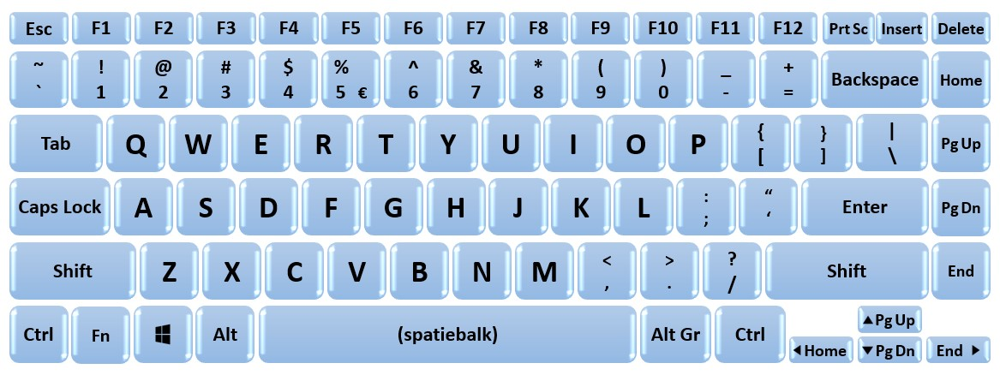

Inleiding.
Een toetsenbord is een belangrijk invoerapparaat voor computers en andere elektronische apparaten. Het wordt gebruikt om tekst in te voeren in documenten, e-mails, zoekopdrachten en andere soorten inhoud. Toetsenborden zijn er in vele verschillende vormen en maten, en kunnen verbonden worden met een computer via een USB-kabel of draadloos.
Een toetsenbord is in de laatste decenia enorm veranderd op gebied van uiterlijk en technologieën. In de wereld van nu is een toetsenbord onmisbaar. niet alleen voor een pc en laptop, maar ook op een tablet en telefoon is een ingebouwd toetsenbord noodzakelijk.
Het toetsenbord is een van de meest fundamentele inputapparaten voor computers. Het wordt vaak gebruikt in combinatie met een muis of touchpad om een computer te bedienen. In dit verslag zal ik dieper ingaan op de geschiedenis, ontwikkeling en verschillende soorten toetsenborden die momenteel op de markt zijn.
